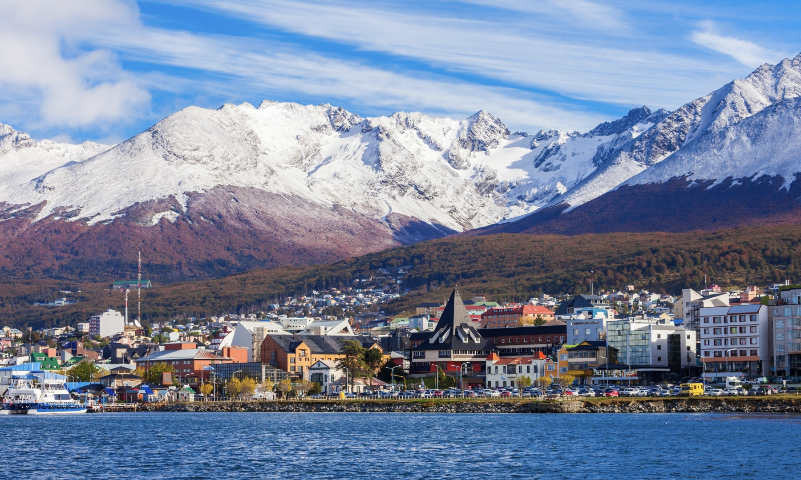

Conocé Ushuaia
 Ushuaia es la ciudad más austral del planeta y la puerta de entrada a algunos de los paisajes más espectaculares y salvajes del mundo. Rodeada por la imponente cordillera de los Andes y las frías aguas del Canal Beagle, esta ciudad combina historia, aventura y una naturaleza que asombra en cada rincón.
Su nombre proviene del idioma yagán: ushuaia significa “bahía que mira al poniente”. Originalmente habitada por pueblos originarios como los yámanas y los selk'nam, la región fue testigo de una rica vida cultural y espiritual mucho antes de la llegada de los europeos.
Durante décadas, Ushuaia fue una ciudad aislada, conectada con el resto del país principalmente por vía marítima. Sin embargo, a partir de los años ‘70 y ‘80 comenzó a crecer gracias a políticas de incentivo industrial y al auge del turismo. Hoy, es un punto clave para los viajeros que buscan explorar Tierra del Fuego, realizar excursiones al Parque Nacional, navegar el Canal Beagle o partir en crucero rumbo a la Antártida.
Este blog es un homenaje a este rincón del mundo que me vio nacer, un espacio donde comparto experiencias, caminatas, paisajes y secretos que hacen de Ushuaia un lugar verdaderamente único.